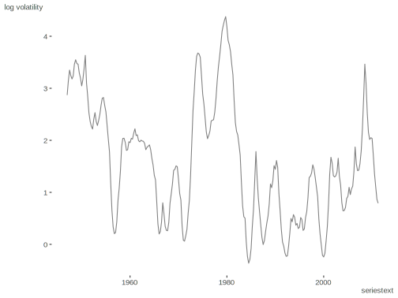
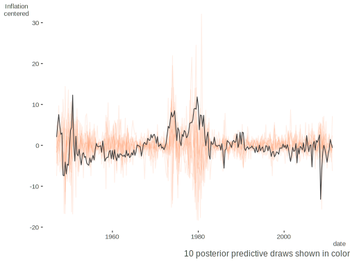

Bayesian Stochastic Volatility Model
Stochastic Volatility Model for centered time series over \(t\) equally spaced points. The latent parameter \(h\) is the log volatility, φ the persistence of the volatility and μ the mean log volatility. ϵ is the white-noise shock and δ the shock on volatility. The Stan code is based on that in the manual (at the time I originally played with it).
y_t = exp(h_t/2)*ϵ_t
h_t = μ + φ*(h_{t-1}-μ) + δ_t*σ
h_1 ~ N(μ, σ/sqrt(1-φ^2))
ϵ_t ~ N(0,1); δ_t ~ N(0,1)
With some rearranging:
ϵ_t = y_t*exp(-h_t/2)
y_t ~ N(0, exp(h_t/2)
h_t ~ N(μ + φ*(h_t-μ), σ)
Data Setup
The data regards inflation based on the U.S. consumer price index (inflation = 400*log(cpi_t/cpi_{t-1}), from the second quarter of 1947 to the second quarter
of 2011 (from Statistical Computation and Modeling 2014, chap 11).
library(tidyverse)
d = read_csv(
'https://raw.githubusercontent.com/m-clark/Datasets/master/us%20cpi/USCPI.csv',
col_names = 'inflation'
)
inflation = pull(d, inflation)
summary(inflation) Min. 1st Qu. Median Mean 3rd Qu. Max.
-9.557 1.843 3.248 3.634 4.819 15.931 inflation_cen = scale(inflation, scale = FALSE)Model Code
This original code keeps to the above formulation but can take a long time to converge. ϵ_t and δ_t are implicit.
data {
int<lower = 0> N_t; // Number of time points (equally spaced)
vector[N_t] y; // mean corrected response at time t
}
parameters {
real mu; // mean log volatility
real<lower = -1,upper = 1> phi; // persistence of volatility
real<lower = 0> sigma; // white noise shock scale
vector[N_t] h; // log volatility at time t
}
model {
//priors
phi ~ uniform(-1, 1);
sigma ~ cauchy(0, 5);
mu ~ cauchy(0, 10);
//likelihood
h[1] ~ normal(mu, sigma / sqrt(1 - phi * phi));
for (t in 2:N_t)
h[t] ~ normal(mu + phi * (h[t - 1] - mu), sigma);
for (t in 1:N_t)
y ~ normal(0, exp(h[t] / 2));
}
This code is more performant and will be used to actually estimate the model.
data {
int<lower = 0> N_t; // N time points (equally spaced)
vector[N_t] y; // mean corrected response at time t
}
parameters {
real mu; // mean log volatility
real<lower = -1,upper = 1> phi; // persistence of volatility
real<lower = 0> sigma; // white noise shock scale
vector[N_t] h_std; // standardized log volatility at time t
}
transformed parameters{
vector[N_t] h; // log volatility at time t
h = h_std * sigma;
h[1] = h[1] / sqrt(1-phi * phi);
h = h + mu;
for (t in 2:N_t)
h[t] = h[t] + phi * (h[t-1] - mu);
}
model {
//priors
phi ~ uniform(-1, 1);
sigma ~ cauchy(0, 5);
mu ~ cauchy(0, 10);
h_std ~ normal(0, 1);
//likelihood
y ~ normal(0, exp(h/2));
}
generated quantities{
vector[N_t] y_rep;
for (t in 1:N_t){
y_rep[t] = normal_rng(0, exp(h[t]/2));
}
}Estimation
We can use c() to get rid of matrix format, or specify as matrix instead of vector in model code.
stan_data = list(N_t = length(inflation_cen), y = c(inflation_cen))
library(rstan)
fit = sampling(
bayes_sv,
data = stan_data,
cores = 4,
thin = 4
)Results
Explore the results.
print(
fit,
digits = 3,
par = c('mu', 'phi', 'sigma'),
probs = c(.025, .5, .975)
)Inference for Stan model: c65225b34c51f358116525cb9ba6c87c.
4 chains, each with iter=2000; warmup=1000; thin=4;
post-warmup draws per chain=250, total post-warmup draws=1000.
mean se_mean sd 2.5% 50% 97.5% n_eff Rhat
mu 1.609 0.014 0.423 0.787 1.602 2.481 853 0.999
phi 0.893 0.002 0.040 0.803 0.897 0.966 723 0.999
sigma 0.620 0.004 0.114 0.396 0.619 0.851 763 0.997
Samples were drawn using NUTS(diag_e) at Wed Nov 25 18:00:01 2020.
For each parameter, n_eff is a crude measure of effective sample size,
and Rhat is the potential scale reduction factor on split chains (at
convergence, Rhat=1).Visualization
With the necessary components in place, we can visualize our predictions. Compare to fig. 11.1 in the text.
# Create y_rep 'by-hand'
h = extract(fit, 'h')$h
# y_rep = apply(h, 1, function(h) rnorm(length(inflation), 0, exp(h / 2)))
# or just extract
y_rep = extract(fit, 'y_rep')$y_rep
h = colMeans(h)
library(lubridate)
library(scales)
series = ymd(paste0(rep(1947:2014, e = 4), '-', c('01', '04', '07', '10'), '-', '01'))
seriestext = series[1:length(inflation)]
Source
Original code available at: https://github.com/m-clark/Miscellaneous-R-Code/blob/master/ModelFitting/Bayesian/stochasticVolatility.R